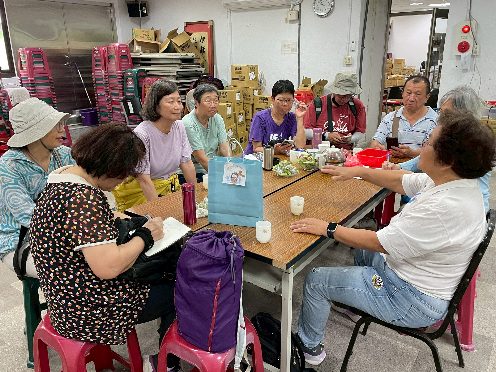
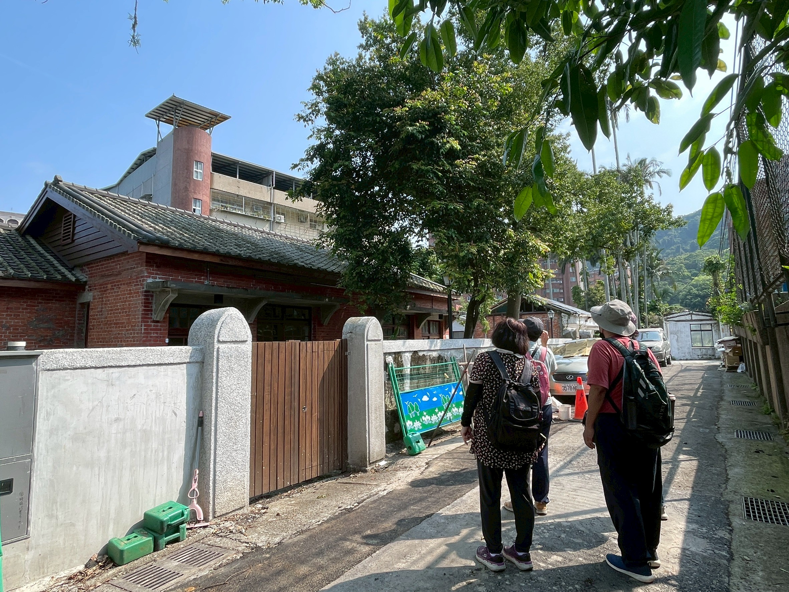
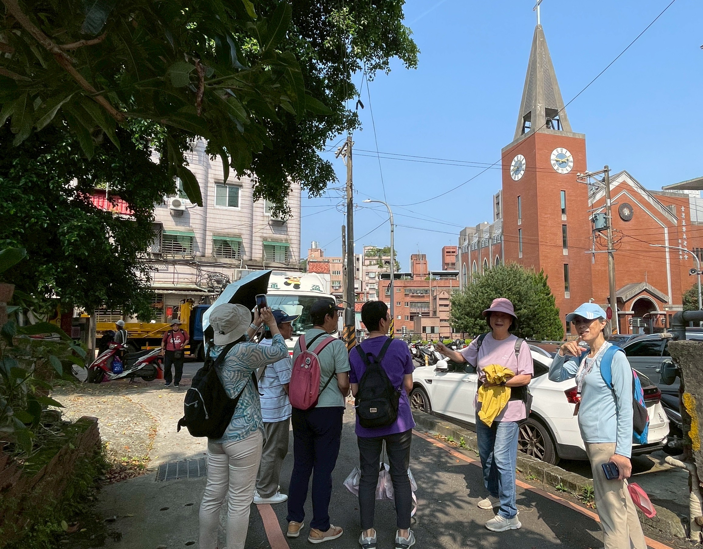
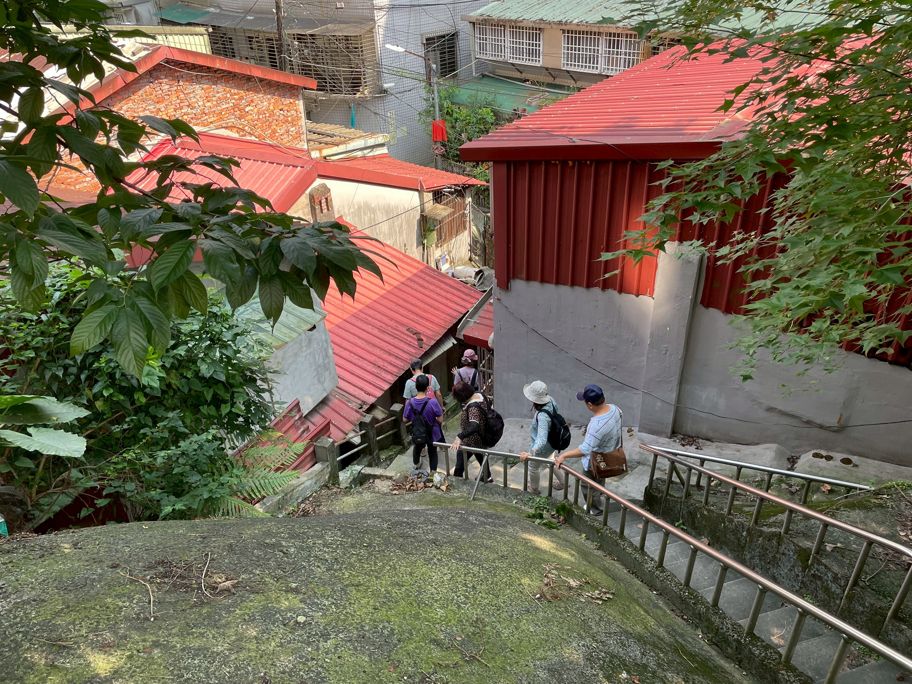
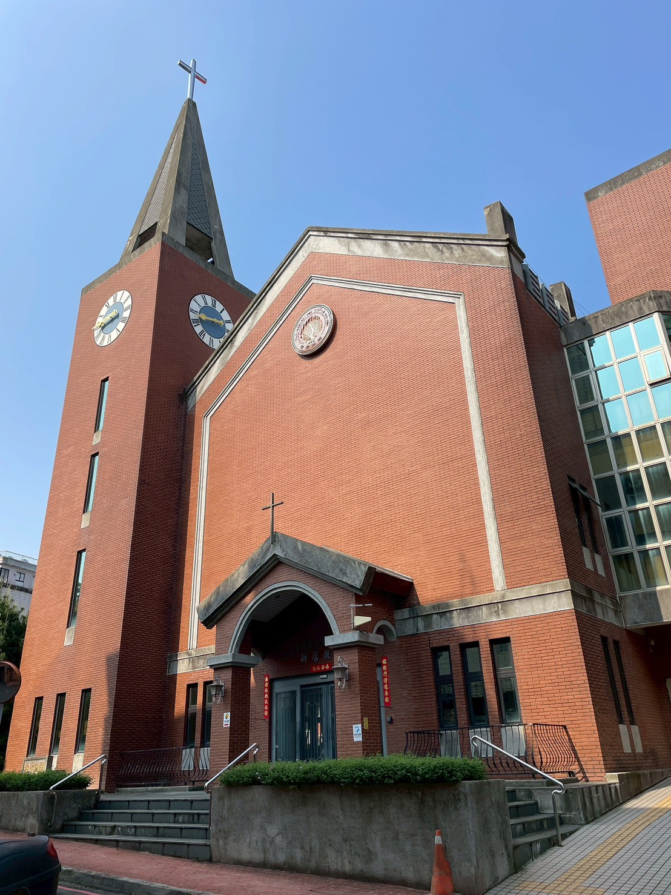

把耳朵貼近地方
這一頁從一場訪談開始。郭里長與在地耆老的口述，像替國校路打開一扇門，讓大官聚落、輕便台車、煤礦坑道與河岸治理的往事，在同伴們的聆聽與追問裡慢慢展開。

紀錄者
吳培珍錄音
紀錄類別 （可複選）
■ 人物（對象名稱：郭儒鈞） □ 商店（類別： ） □ 老樹 □ 老建築
□ 自然景點 □ 特色景觀 □ 史蹟 □ 其他（ ）
所在位置
新北市新店區國校市民活動中心
地址：231 新北市新店區北宜路一段115巷8弄3-1號
受訪者
郭儒鈞 現任國校里里長；前國大代表、新北市（台北縣）縣議員
帶領老師：高淑華老師（新店崇光社區大學）
預設訪談 議題
▶ 國校路周邊大環境歷史介紹（大官聚落、達官顯要聚居原因）
▶ 舊輕便路（台車道）的發展歷程與現今蛛絲馬跡
▶ 明治煤礦（和美煤礦）的礦坑範圍與產業遺跡
▶ 颱風災害與堤防建設的地方治理經驗
▶ 受訪者對地方文史保存的建議與看法
紀錄摘要
訪談前國大代表、縣議員，現任國校里里長郭儒鈞，針對新店國校路一帶的歷史變遷、產業記憶與地方治理歷程進行深入口述訪談。以下依議題分類整理：
一、大環境介紹與「大官聚落」的形成
【依山傍水的好風水】 早期國民政府遷台時，國校路與新店國小周邊腹地平坦、空地極多，早期甚至可以停降直升機。因擁有「背山面水」（背靠和美山、小獅山，面臨新店溪）的絕佳風水，吸引大量跟隨政府來台的將軍、國大代表、立法委員及國防部長在此定居，成為當時極具代表性的政軍要人聚居地。
【達官顯要的聚落特色】 這些達官顯要多在國校路兩旁自建「獨門獨院」的房舍。為因應高官需求，該區甚至特別拉設了專屬獨立的電線（有別於一般民用電線系統）。知名住戶包含將軍邵毓麟，以及每天以熱水沖洗大門消毒的警官學校李士珍等人，充分展現當時的特殊生活方式與階級意識。
【安華二村的興衰】 國校路周邊過去曾有國安局興建的眷村「安華二村」，約有12戶三層樓建築。後因土地產權與都市規劃等因素，住戶被分配搬遷至中和連城路一帶，原址現已拆除改建為停車場，成為當地聚落歷史的重要見證。
二、舊輕便路（台車道）發展與明治煤礦
【台車道（輕便路）軌跡】 早期新店溪沿岸設有專門運送煤礦的輕便台車道。受訪者記憶中，台車道行經現今的廣明路、新店後街與捷運站周邊一帶，當地目前仍有老照片展示這段珍貴的工業運輸歷史。
【明治煤礦】 礦坑範圍從青潭山區一路延伸，甚至穿過現今道路的下方。礦坑遺跡極深，近期當地開挖污水下水道工程時，工程車輛甚至曾意外掉落進早年留存的礦坑坑洞中，足見礦坑分布範圍之廣。
【在地孩童的探險記憶】 當地居民（受訪者翁東源）兒時常將廢棄的煤礦坑當作遊樂場，會拿著火把進去坑道內部探險，是當地獨特的童年共同記憶，也反映出早期礦業文化對生活的深遠影響。
【瑠公圳的豐沛記憶】 受訪者亦提及，早年的瑠公圳水量豐沛，水深起碼有八公尺，是當地居民兒時游泳嬉戲的地方，與今日幾近乾涸的景象形成強烈對比，映照出都市化帶來的水文化變遷。
三、特殊地景「小九份」與地方治理往事
【懸崖邊的建築奇觀「小九份」】 國校路有許多房屋是沿著新店溪的山壁崖邊興建。因為地形高低落差極大，從路面看是一樓的平房，若從河岸往上看，則變成深達四樓至七樓的建築，造就了被當地人稱為「小九份」的奇特景觀，是新店地區不可多得的特色地景。
【取締「摩天」特種營業】 早年新店國小附近沿岸的違建區，曾存在被稱為「摩天」（摩天嶺）的紅燈區。當時甚至有小學生放學後在樓上目睹特種行業拉客的情形。受訪者在擔任議員期間，為維護校園環境與社區風氣，強制介入並取締拆除了這些違規營業場所，展現了其強烈的地方責任感。
【捍衛公有地的強硬立場】 受訪者分享在處理辦公室（公務局土地）周邊的土地鑑界糾紛時，態度極為強硬。面對他人企圖侵佔公有地，他堅持「不是你的，一寸都不會給你」，最終在法官與地政人員的見證下成功捍衛了公共資產，充分展現其剛正不阿的處事風格。
四、颱風災情搶救與防汛建設爭取
【驚險的房屋墜河事件】 一場颱風（約2001年）導致國校路47號後方的四間沿河崖邊房屋，因地基遭水流長期掏空，直接「轟一聲」崩落墜入下方的碧潭新店溪中，連家具至今都還沉在河底。此事件為當地造成極大震撼，也揭示了沿河違建的結構危機。
【緊急撤離與爭取經費】 受訪者身為里長，第一時間迅速將受影響居民撤離安置於馬公公園，並提供物資照料。隨後，他運用過去擔任國大代表累積的人脈，直接找立法委員陪同前往經濟部，以「恐嚇有理」的談判策略，向中央官員強調若不緊急處理，漩渦水流將掏空整個地基，屆時整條新店路與新店國小都可能因此崩塌，逼使官員正視問題嚴重性。
【消波塊護岸與防汛腳踏車道的誕生】 在受訪者的積極爭取下，終於成功向中央要到共計兩千多萬元的緊急搶救經費。工程團隊就地取材，運用「消波塊」緊急築起了高聳的護岸擋土牆與堤防。這項緊急建設不僅成功穩固了地基，更成為今日當地防汛腳踏車步道的基礎，化災難為地方建設的重要契機。
延伸調查計畫
【受訪者：翁東源】
身份：國校里3鄰鄰長之先生；在地長大之老居民
訪談地點：北宜路110號3樓
訪談重點：
▶ 記憶中瑠公圳的水量（水深約八公尺、兒時游泳經歷）
▶ 拿著火把進廢棄礦坑探險的親身童年回憶
▶ 記憶中的輕便路（台車道）景象
▶ 早期的上學路徑與日常生活
照片 （或截圖）
（預留照片/截圖位置）
建議擷取訪談現場、國校路老建築、碧潭護岸消波塊堤防等相關影像。
由高淑華老師帶領新店崇光社區大學「河川閱讀歷史行動志工」，於國校里市民活動中心訪談國校里郭儒鈞里長。
光影也替地方作證



